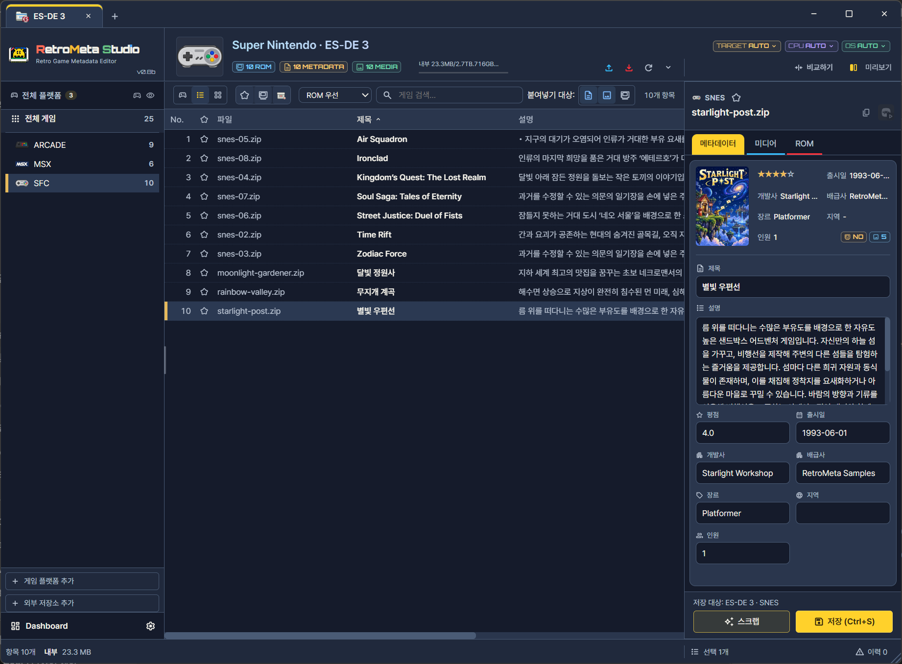
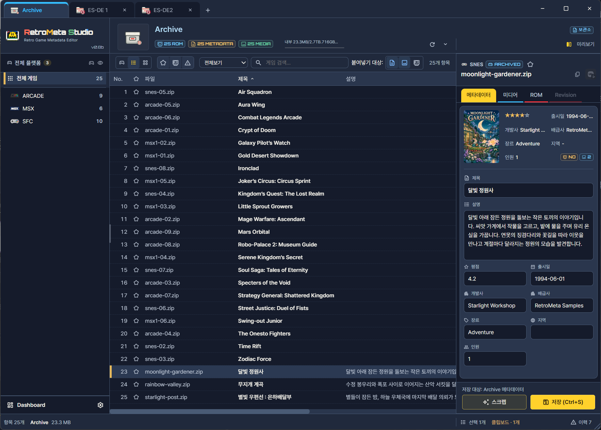
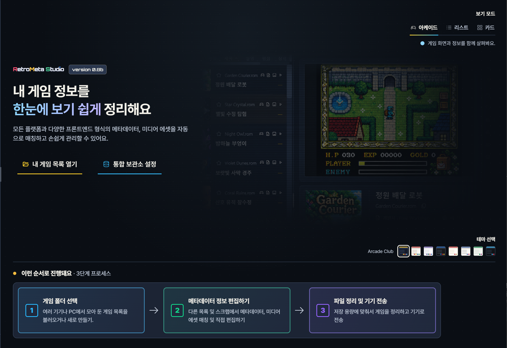

화면 구성
앱 작업 화면을 영역별로 나누어 각 영역이 무엇을 보여 주고 어떤 작업의 출발점이 되는지 설명합니다. 이 페이지는 처음 앱을 열었을 때 "어디에서 무엇을 누르는지"를 찾기 위한 지도입니다. 각 영역의 번호는 그림과 같고, 자세한 동작은 연결된 페이지에 있습니다.
화면은 크게 컬렉션 작업 화면, 보관소(Archive) 화면, 시작 화면, 별도 창으로 나뉩니다. 컬렉션은 앱에 등록하여 탭으로 연 게임목록이고, 저장소는 여러 게임목록에서 모은 메타데이터를 보관하는 기능입니다. 두 화면은 구성이 비슷하지만 저장 대상과 쓸 수 있는 작업이 다르므로, 작업을 시작하기 전에 어느 탭이 선택되어 있는지 확인하는 습관이 필요합니다.
컬렉션 작업 화면
게임목록을 열면 나타나는 기본 작업 화면입니다. 왼쪽에서 시스템을 고르고, 가운데에서 게임을 고르고, 오른쪽 상세 영역에서 내용을 고치는 흐름으로 사용합니다. 아래 그림은 리스트 보기 기준이며, 보기 모드에 따라 게임목록과 상세 영역의 모양이 달라집니다.


- 1상단 탭
- 2상단 요약
- 3시스템 탐색
- 4목록 도구
- 5게임목록
- 6상세 정보
- 7Dashboard·설정
- 8하단 상태
| 번호 | 영역 | 하는 일 | 자세히 |
|---|---|---|---|
| ① | 상단 탭 | 열어 둔 컬렉션과 저장소 사이를 전환합니다. 현재 탭이 편집·가져오기·붙여넣기의 기본 대상이므로, 작업 전에 어느 탭이 선택되어 있는지 확인합니다. | 게임목록 열기 |
| ② | 상단 요약 영역 | 현재 컬렉션과 시스템의 이름, 게임·자료 수, 저장 공간 정보를 보여 주고, 비교하기 같은 도구 버튼을 제공합니다. 어느 게임목록을 작업 중인지 이름으로 확인하는 곳이기도 합니다. | 탐색·검색·정렬 |
| ③ | 시스템 탐색 | 전체 게임 또는 시스템 하나를 골라 작업 범위를 정합니다. 저장소로 이동하는 항목도 이곳에 있습니다. 여기서 고른 범위가 편집·가져오기·스크랩의 대상 범위가 됩니다. | 탐색·검색·정렬 |
| ④ | 목록 도구 | 보기 모드 전환, 검색, 필터, 정렬, 복사 범위 선택을 담당합니다. 지금 보이는 게임목록에만 적용되며, 게임목록 파일 자체를 바꾸지는 않습니다. | 보기 모드 |
| ⑤ | 게임목록 | 현재 범위의 게임을 행·카드·아케이드 형태로 보여 줍니다. 한 게임을 선택하거나 여러 게임을 선택해 작업합니다. | 보기 모드 |
| ⑥ | 상세 영역 | 선택한 게임의 메타데이터·미디어·ROM 정보를 보고 편집하며, 저장 대상과 저장 버튼이 있습니다. | 메타데이터·미디어 편집 |
| ⑦ | Dashboard·설정 | 자료 집계 화면과 앱 설정을 엽니다. 앱 전체에 관한 동작은 이곳에서 정합니다. | Dashboard · 설정 |
| ⑧ | 하단 상태 | 항목 수와 선택 수 등 현재 상태를 보여 줍니다. 의도한 개수만 선택했는지 확인하는 데 쓰이며, 복사·스크랩 같은 일괄 작업 전에 확인하면 대상 범위를 착각하는 실수를 줄일 수 있습니다. |
저장소 화면
Archive 탭은 컬렉션 작업 화면과 같은 구성을 쓰되, 상세 영역 대신 게임 정보와 변경 이력이 나옵니다. 저장소는 같은 게임의 여러 버전을 출처와 함께 보관하는 곳이므로, 출처, 보유 상태, 기록 비교를 위한 영역이 추가됩니다. 저장소 자체의 사용법은 저장소에서 설명합니다.


- 1상단 탭
- 2상단 요약
- 3시스템 탐색
- 4목록 도구
- 5게임목록
- 6상세 정보
- 7Dashboard·설정
- 8하단 상태
컬렉션 작업 화면과 비슷해 보이더라도, 이곳의 작업은 저장소에 기록됩니다. 메뉴에서 컬렉션 탭에서만 쓸 수 있는 작업이 비활성으로 나오는 이유가 여기에 있습니다.
시작 화면
등록된 컬렉션이 없거나 처음 실행했을 때 나오는 화면입니다. 여기에서 게임목록을 열고, 화면의 기본 모양을 정합니다. 이 화면의 선택은 모두 나중에 바꿀 수 있는 성격의 것이므로, 처음에는 게임목록을 여는 것만 해도 충분합니다.
| 영역 | 하는 일 |
|---|---|
| 내 게임 목록 열기 | 컬렉션 추가 창을 엽니다. 처음에는 이 버튼으로 게임목록을 등록하는 것이 가장 빠릅니다. 입력 항목은 게임목록 열기에서 설명합니다. |
| 통합 보관소 설정 | 보관소(Archive)가 사용할 폴더를 지정합니다. 저장소를 쓰지 않는다면 처음에는 건너뛰어도 됩니다. 나중에 설정에서 지정할 수 있는지는 설정의 보관소(Archive)에서 보관소 위치와 설정 상태를 관리합니다.. |
| 보기 모드·테마 선택 | 처음 열 화면의 보기 방식과 색 구성을 고릅니다. 고른 뒤에도 작업 화면에서 보기 모드를 바꿀 수 있습니다. 모드별 차이는 보기 모드에서 비교합니다. |


- 1내 게임 목록 열기
- 2통합 보관소 설정
- 3보기 모드
- 4테마
별도 창
기능에 따라 작업 화면 위에 별도 창이 열립니다. 별도 창은 한 번에 한 가지 일을 끝내도록 구성되어 있으며, 창에서 확정하기 전에는 게임목록에 적용되지 않습니다. 따라서 창을 열어 살펴보다가 닫더라도 게임목록이 바뀔 걱정은 하지 않아도 됩니다.
| 창 | 다루는 일 | 자세히 |
|---|---|---|
| 스크랩 | 온라인 서비스에서 게임을 검색하고, 후보를 고르고, 적용할 항목을 선택합니다. | 온라인 스크랩 |
| 비교 | 두 게임목록의 차이를 나란히 보고 채우거나 복사합니다. | 게임목록 비교 |
| 설정 | 앱 동작 환경을 정합니다. | 설정 |
창마다 번호별 설명은 각 기능 페이지에 있습니다.
문제 해결
화면에 게임이 보이지 않습니다.
시스템 탐색에서 고른 범위, 검색어, 필터가 함께 적용되고 있을 수 있습니다. 점검 순서는 탐색·검색·정렬에 있습니다.
저장했는데 의도한 게임목록이 아닌 곳에 기록된 것 같습니다.
저장은 상세 영역의 저장 대상에 기록됩니다. 상단 탭과 상단 요약 영역의 이름을 확인하고, 다른 게임목록에도 반영하려면 복사·붙여넣기나 게임목록 비교를 사용합니다.